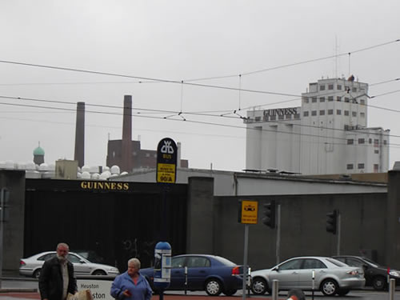
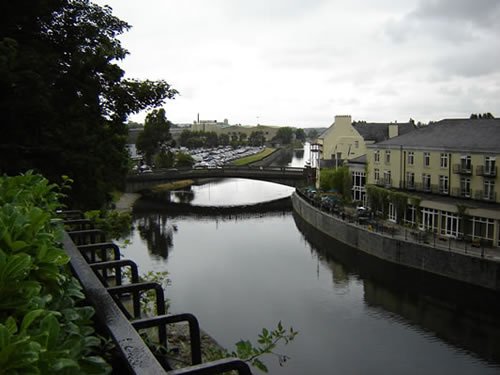
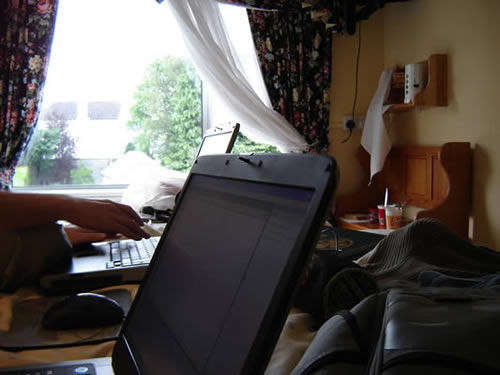
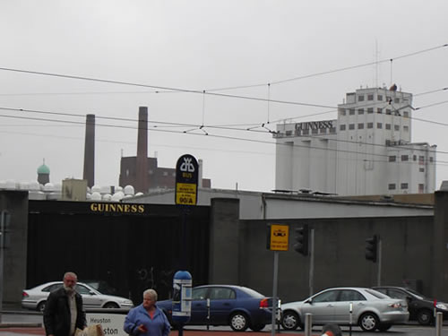
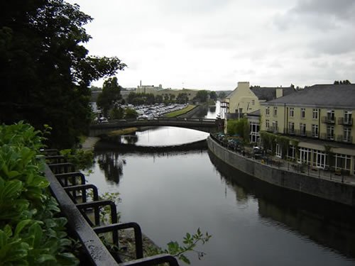
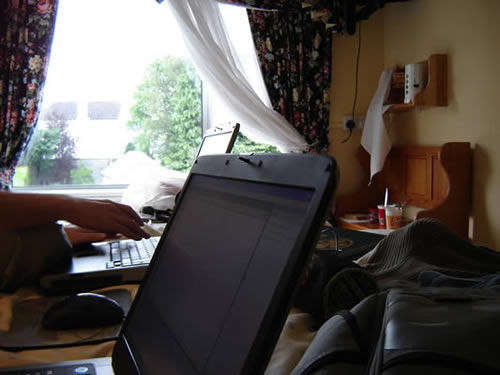

This entry was posted on Tuesday, July 26th, 2005 at 8:03 am and is filed under General. You can follow any responses to this entry through the RSS 2.0 feed. You can leave a response, or trackback from your own site.



Coucou ^^
C’est votre logement, le p’tit château? ) Très beau, vraiment sympa ^^ Merci d’avoir mis des photos, JAH ^_^ Dis donc, il fait beau chez vous.. aucun nuage! :p~ … Juste pour vous faire rire un peu, regardez le site suivant ^^ C’est surtout pour JAH qui vient de découvrir la mentalité japonaise
) Très beau, vraiment sympa ^^ Merci d’avoir mis des photos, JAH ^_^ Dis donc, il fait beau chez vous.. aucun nuage! :p~ … Juste pour vous faire rire un peu, regardez le site suivant ^^ C’est surtout pour JAH qui vient de découvrir la mentalité japonaise 
npu4.free.fr/ <- Le Franponais ^__^
Bon courage sous la pluie! Ici c’est pareil – il pleut 5 fois de la journée … et il pleut des cordes!!! En même temps il fait trop chou! Dès que la pluie s’arrète, le soleil sort… C’est bizarre, la France.
Bisous ++
Wera
lool terrible ton site wera, moi ki m ennuyait kom un loque a minuit passe, jviens de trouver koi faire pour tenir encore un peu plus longtemps !
vous bossez la dedans whoaaa trop fort, moi et chris la ou on est, heu … ben … tas deja vu
bon allez jcontinue a coder, discuter sur msn(vive les cam), ziks, bouffe, lecture de site et autres
++
MDRRRRRRRRR, trop bien, Jah. Je suis fière de vous. A priori, vous êtes une minorité française qui vient de découvrir le dilemne des français avec la langue anglaise. Mais je vous rassure … les anglais sont aussi têtus que les français. :p~
Mais je vous rassure … les anglais sont aussi têtus que les français. :p~
Bon courage, ça va aller. ^___^d
Bisous ++
Wera
PS: Mehdi, de rien. ^^V Y en a pour bien se marrer, n’est-ce pas?